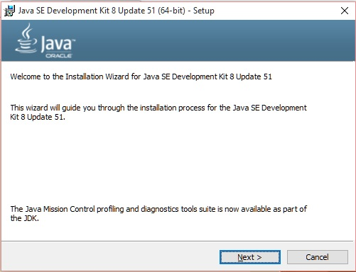
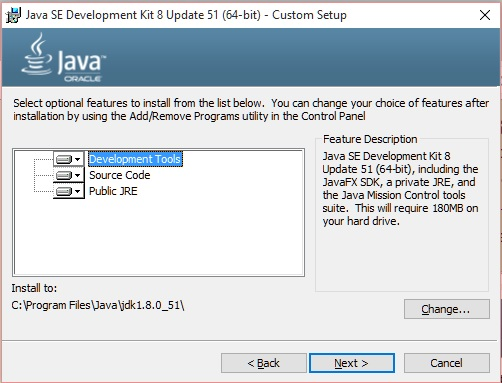
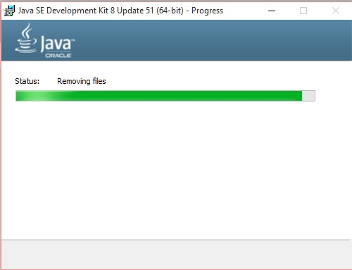
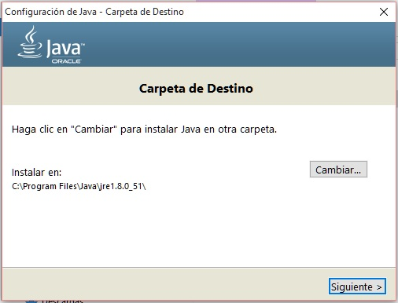
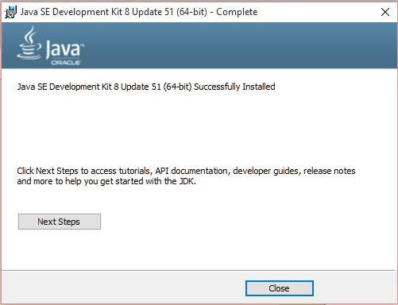

- Instalación de Java |
Para poder hacer este curso debemos instalar el compilador de Java y la máquina virtual de Java. Estas herramientas las podemos descargar de:
Java SE Development Kit (descargar el Windows x64 o si tiene un sistema operativo de 32 bits instale el Windows x86).
Una vez que tenemos el JDK (Java Development Kit) procedemos a instalarlo:
La versión a instalar conviene que sea la última (en este momento disponemos la versión 8)
Presionamos el botón "next". Haremos la instalación por defecto por lo que presionamos el botón next nuevamente:

Esperamos unos minutos mientras se procede a la instalación de Java:

Luego aparece un diálogo donde debemos especificar el directorio donde almacenar el JRE y también procedemos a efectuar la instalación por defecto presionando el botón "next":

Una vez finalizado el proceso de instalación debe aparecer un diálogo similar a este y presionamos el botón Close (por el momento no vamos a instalar "Tutorials, Api documentation etc.):
